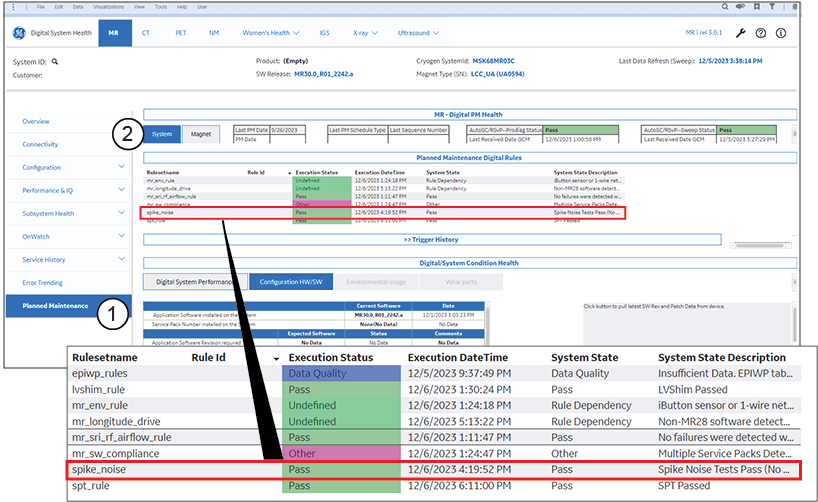
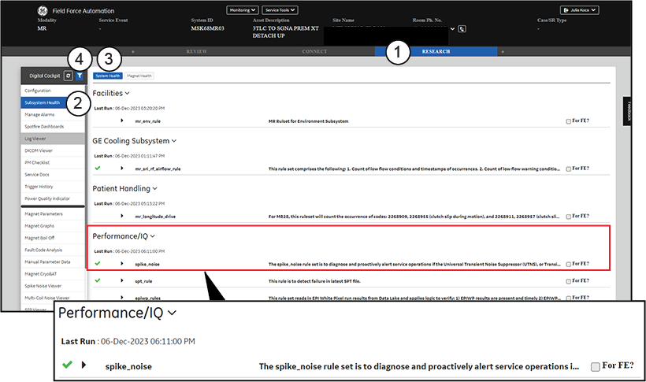
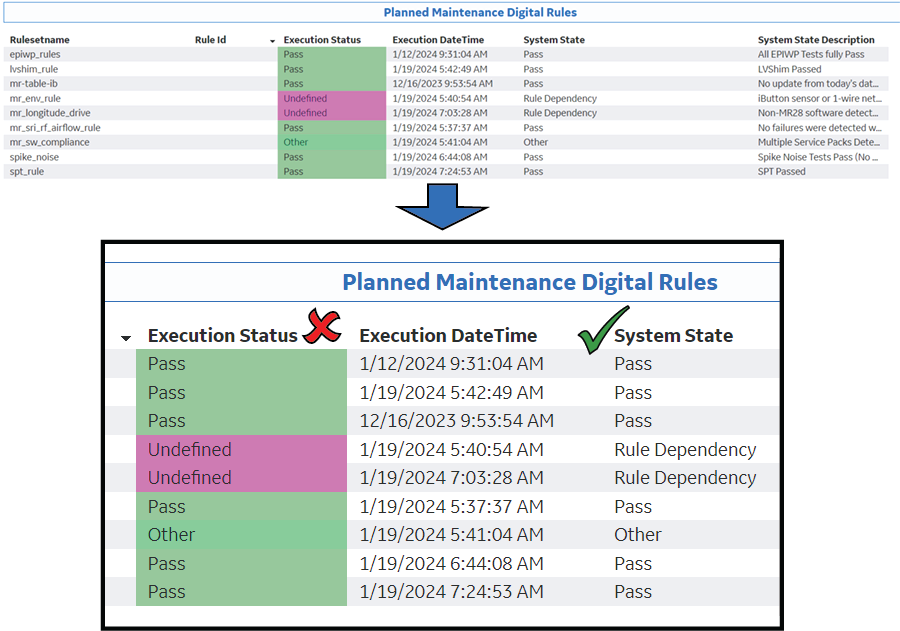
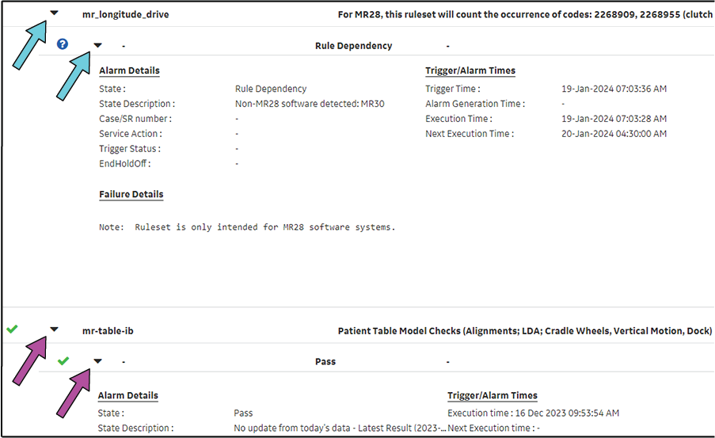
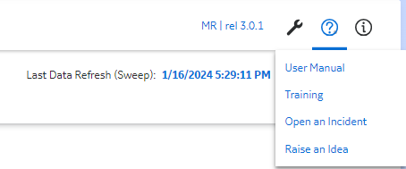
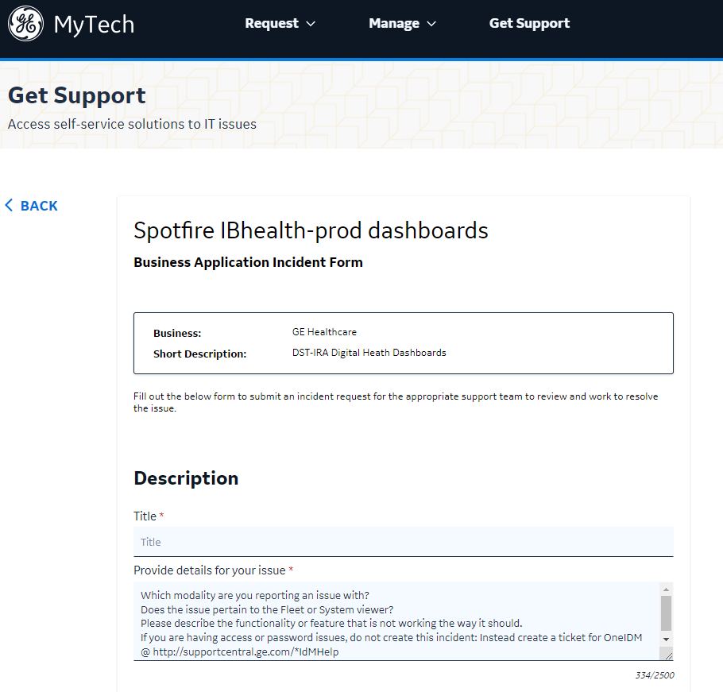
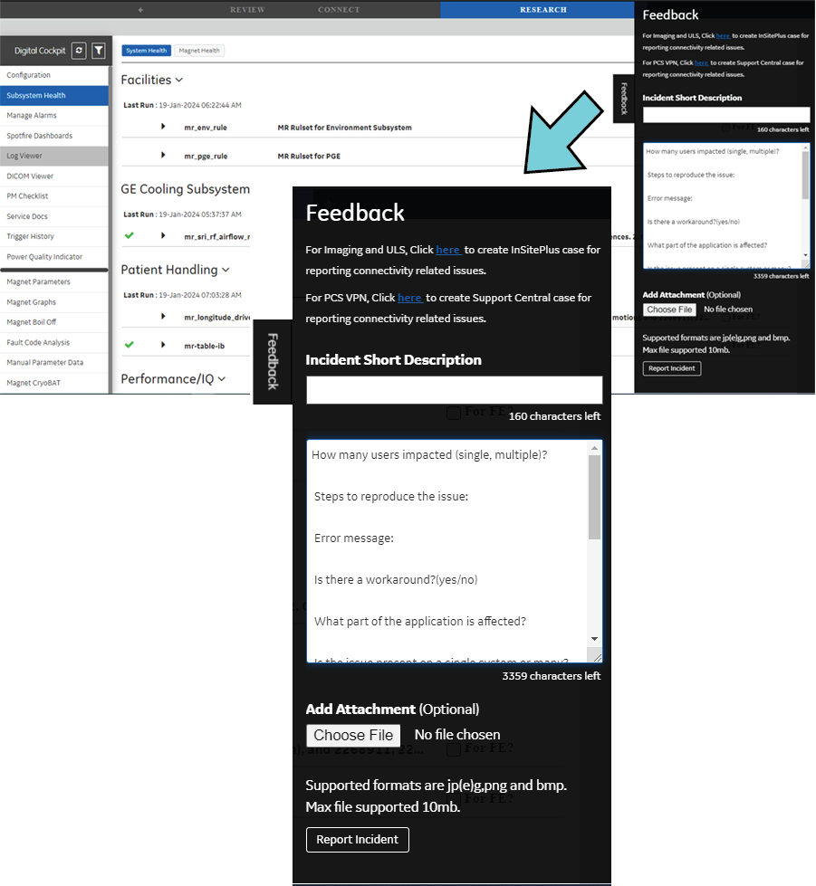

Do preventative maintenance by examining spike noise remotely.
Prerequisites
Personnel requirements
Required persons
Preliminary requirements
Procedure
Finalization
1
-
5 minutes
-
Safety
Before working in any GE HealthCare MR suite or doing any GE HealthCare service procedure, you must:
Have read and understood all hazard conditions and safety requirements in the latest revision of the GE HealthCare MR Service Safety Manual (5452735).
Have successfully completed all relevant GE HealthCare Environmental Health and Safety (EHS) courses (or for non-GE HealthCare employees, equivalent workplace training courses).
Comply with all site-specific training and workplace safety requirements.
If you have any safety concerns at any time, do not begin work or immediately stop work and move to a safe location. Immediately contact your supervisor or site safety officer for instructions on how to proceed.
About this task
This task uses the digital rule spike_noise to remotely examine possible image artifacts caused by white pixel.
Procedure
Use one of the MR Digital Planned Maintenance (PM) Dashboards to examine the digital rule:
On the list on the left side of the screen, click Planned Maintenance.
On the Planned Maintenance page, click System.
Figure 1. MR Spotfire System Health (PM) page

1
Planned Maintenance
2
System
If using FFA
Select the Research tab.
On the list on the left side of the screen, click Subsystem Health.
Click the System Health option.
Click the Filter button and select PM.
Figure 2. FFA PM Workflow application

1
Research tab
2
Subsystem Health drop-down list
3
System Health option
4
Filter button
Use the spike_noise digital rule to examine possible image artifacts caused by white pixel.
Review the digital rule's system state.
MR Digital PM Dashboard
Action to take
If using Spotfire
Make sure that you are reviewing the System State and not the Execution Status.Figure 3. Spotfire System State

If using FFA
Make sure that the two black triangles for each digital rule point down. When they point down, additional information about the rule is shown.Figure 4. FFA system state information shown when the black triangles point down

Note The status of the digital rule's system state does not always directly correlate to the ePM Checklist results.
Table 1. Digital rule system states
System state
System state explanation
Pass
The digital rule is considered a pass for planned maintenance.
Warning
There is an issue, but it is not a failure for planned maintenance. Troubleshoot the issue at the next on-site visit.
Fail
The digital rule is considered a failure for planned maintenance.
Data Quality
There is an issue with data flow. The digital rule is considered a failure for planned maintenance.
Execution Failure
There is an issue: the analytics encountered a problem during execution. The digital rule is considered a failure for planned maintenance.
Other
This system state is only for observations and troubleshooting. No action is required for planned maintenance.
Rule Dependency
The digital rule is not applicable, and no action is required. The digital rule is considered a pass for planned maintenance.
If the digital rule's system state is Pass, Warning, Other, or Rule Dependency, record Pass on the ePM Checklist.
If the digital rule's system state is Fail, Data Quality, or Execution Failure, go to Step 7.
Based on the system state and system state description, determine what actions need to be addressed.
Table 2. Recommended actions for system state descriptions
System state
System state description
Recommended actions
Fail
Actionable Issue
Critical Issue
Use the Report Manager Tool or the MRlogviewer to make sure of failure.
See Report Manager Tool or contact the Technical Support Engineer (TSE) for MRlogviewer support.
Review the logs in the Report Manager Tool or MRlogviewer.
If the logs pass, record Pass on the ePM Checklist.
If the logs fail, record Fail on the ePM Checklist and open a corrective repair (CR) to address the issue.
If connected remotely, submit a support ticket in Spotfire:
In the upper right corner, click the question mark icon.Figure 5. Opening an incident in Spotfire

Select Open an Incident from the menu.
Fill in the information about the data quality problem.
Note Make sure to include the affected System ID and as much detail as possible.
Figure 6. Spotfire Incident form

Click Submit.
Reexamine the digital rule's status after 3 days. If the system state is still listed as Data Quality, talk to the customer to determine if there are any issues.
If the customer has not seen any issues, record Pass on the ePM Checklist.
If the customer has seen issues, record Fail on the ePM Checklist and open a corrective repair (CR).
Execution Failure
Execution failure code and details relating to the failure
Submit a support ticket through FFA:
On the right side of the screen, select Feedback.
On the pull-out tab, fill in the information about the issue.
Note Make sure to include the affected System ID and as much detail as possible.
Figure 7. FFA feedback

Click Report Incident.
Reexamine the digital rule's status after 3 days. If the system state is still listed as Execution Failure, talk to the customer to determine if there are any issues.
If the customer has not seen any issues, record Pass on the ePM Checklist.
If the customer has seen issues, record Fail on the ePM Checklist and open a corrective repair (CR).